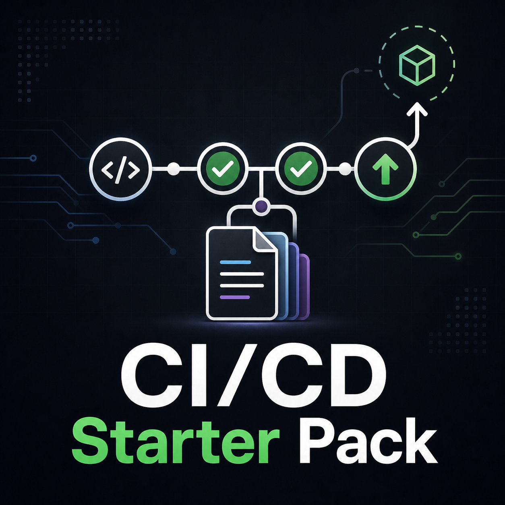

CI workflows
Start with working GitHub Actions patterns for Python testing, linting, formatting, and dependency setup.
For Python developers and small engineering teams
A practical CI/CD starter pack for Python projects with reusable workflow templates, release checks, troubleshooting notes, and walkthroughs you can adapt to real repos.
Launch offer: 20% off until 5 July 2026.

Start with working GitHub Actions patterns for Python testing, linting, formatting, and dependency setup.
Use release-gate and deployment checklists to avoid treating CI as a one-off YAML file.
Get plain-English explanations of the moving parts so you can adapt the files instead of copying blindly.
The free sample repo shows a small baseline. The paid pack adds the supporting material that helps you turn that baseline into something suitable for real projects.
Buy once, download the files, and adapt them to your own Python projects.